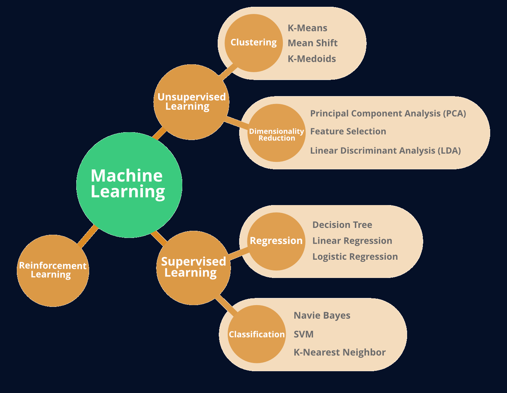

“The science and engineering of making intelligent machines, especially intelligent computer programs”. -John McCarthy-
Artificial Intelligence is an approach to make a computer, a robot, or a product to think how smart human think. AI is a study of how human brain think, learn, decide and work, when it tries to solve problems. And finally this study outputs intelligent software systems. The aim of AI is to improve computer functions which are related to human knowledge, for example, reasoning, learning, and problem-solving.
Artificial intelligence algorithms are generally grouped into three categories. These are Supervised Learning, Unsupervised Learning, and Reinforcement Learning.  This webpage mostly focuses on Neural Networks, Search Algorithms and Reinforcement Learning.